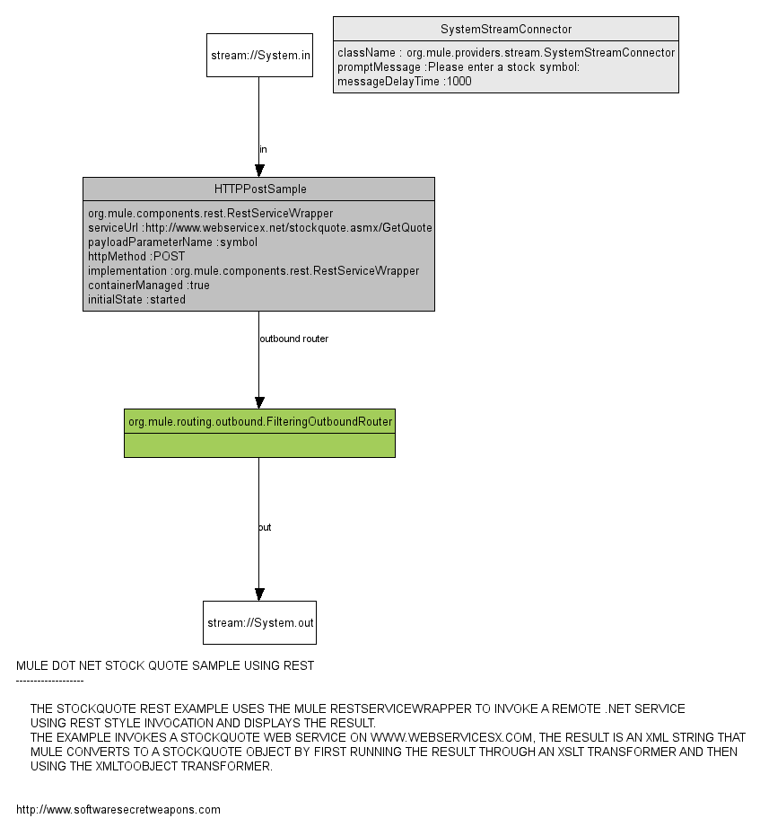

Description :
The StockQuote REST example uses the Mule RestServiceWrapper to invoke a remote .Net service
Using REST style invocation and displays the result.
The example invokes a StockQuote Web Service on www.webservicesx.com, the result is an Xml string that
Mule converts to a StockQuote object by first running the result through an Xslt transformer and then
using the XmlToObject transformer.
Graph :
